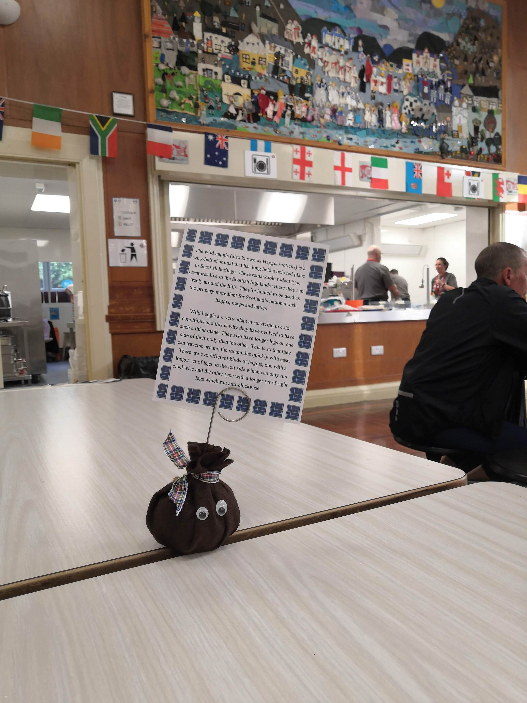
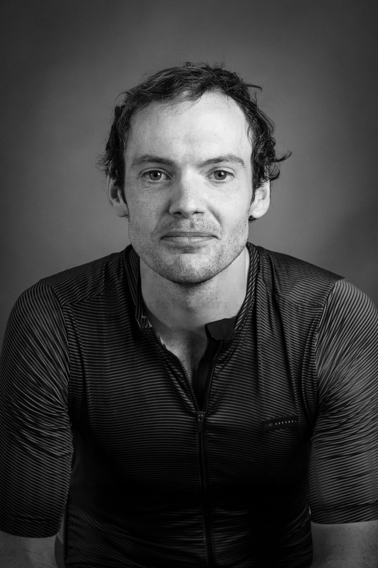

This is a two-part blog post documenting my experience riding the 2022 London-Edinburgh-London cycling event. See part 1 here.
I’m normally a bit of a princess when it comes to sleep and an overall concern with LEL was whether I would be able to sleep given the basic mattresses and cacophony of questionable noises coming from other riders in the dorms. So I was relieved to get a “night” (read: another 3.5 hours) of pretty good sleep and once again woke up before my alarm. I’d packed a good quality eye mask and played white noise through my headphones to drown out everything around me, which proved to be a great decision.
I got up, collected my things and shuffled out the door. My body was still holding up okay for the most part, but my feet were really starting to suffer and I was beginning to get bad hot spots. I realised my £40 triathlon shoes that I had used for the past few years were possibly not the optimal choice for the event, but without any viable alternatives I knew I would have to suck it up. I hobbled to the cafeteria to get breakfast and, in a tired state, stupidly decided that two bits of toast would be sufficient (spoiler alert: it wasn’t). I also grabbed a coffee and bumped into Daniël, and after some more faffing we set off together at 4:30am.
The route through Edinburgh was something I wasn’t particularly looking forward to, especially given the added business from the Fringe festival. I love the city, but years of commuting into central London has eroded most of the enjoyment of cycling through busy streets. Thankfully our early morning start meant that we had a lovely experience, hacking along empty cycle paths in the aero bars.
Before rush hour arrived we made it out onto the quietest section of the route towards Innerleithen and Eskdalemuir. I had heard several other people hated the climb out of Edinburgh but I was finding it a very enjoyable morning, chatting with Daniël on amazingly scenic, quiet roads. Once we had gotten the climbing out the way we were treated to a flowing fast descent through a beautiful valley. Daniël had managed to fully recover from his low energy state from the previous day and was now riding really strongly. The lacklustre toast breakfast was starting to bite now and the ride slowly morphed from us riding together to me desperately clinging on to his wheel. He was once again very gracious and despite me telling him to ride on he sat on the front and dragged me along.
Arriving in Innerleithen I was starving, which was an obvious sign that I had underdone the eating. I embraced my inner fat-man and proceeded to gorge myself at this control. There were a few vegan options, which I sampled all of, but discovered a tray of incredibly tasty hummus wraps. I hobbled between my chair and the tray multiple times, and must have eaten at least 8 of them (sorry if any later riders didn’t get a hummus wrap...). I downed another coffee and left, feeling a million times better.
The ride to the Eskdalemuir control was on similarly picturesque, quiet roads and went by without issue (apart from my growing foot pain). I once again gorged myself at the control, eating multiple cakes, sandwiches and a particularly good vegan crumble and cream.
We continued on and soon reentered England, around 170km into the days ride. When we arrived at the Brampton control just over the border we got our first taste of a busy control, meeting riders that were heading north. We realised how spoiled we had been as there were queues (!) for the food and bathrooms. It made me very appreciative to be ahead of the bulge and of our experience with empty controls. I had been wearing the same bib shorts for 3 days by now so decided a shower and a change of kit was probably needed. This perked me up a bit and we left feeling refreshed.
LEL is an international affair with riders coming from all over and you could clearly spot the area of the world a rider was from based on what they were wearing. The sun was really starting to beat down and the temperature was edging towards 30 degrees celsius. We passed a couple of riders from India going north, up a hill, without any wind to cool them down, wearing arm and leg warmers and gilets! They must have felt like they lucked out as the subsequent days only got hotter. I don’t handle the heat well and briefly considered subjecting the north of England residents to the horrible sight of me with a fully unzipped jersey, but decided against this.
Daniël was somehow continuing to get stronger and I was clearly significantly slowing him down by this point. I felt okay and was enjoying the ride, but he was on another level and I was far more vocal in my suggestions that he leave me and go solo. He once again graciously dismissed my remarks and kindly told me to sit on his wheel all day if I was suffering as it doesn’t make any difference to him if he would be riding solo anyway. This kept the duo together for most of the rolling terrain and we absolutely flew through the first half of the Pennines, pushed on by a tailwind.
I attempted to mentally prepare myself for the most brutal hills of the ride. We hit the first of the two serious hills (Killhope Cross) and he shouted that he would meet me at the top. Despite this hill being pretty brutal, it only served as a minor warmup to the main event of “Chapel Fell”. I had briefly ridden up a small part of this monster on Day 2 when I dropped my sunglasses coming down it, but now had an extra 500km in my legs and really suffered to get to the top. The steepness of it meant that I had to put out 250 watts just to stay upright, which is precisely not what you want 3 days into a sleep deprived ride, but passing a few 5am group riders walking their bikes gave me a bit of a confidence boost.
I finally reached the top and met Drew Buck, a bit of an LEL legend who has ridden it several times in the past on various crazy machines, including one year dressed as a frenchman on an ancient bike (this article is about PBP but he did LEL in a similar outfit). He had set up camp at the top of Chapel Fell and was providing water and “magic flapjacks” to all riders. It is stuff like this that really makes the event special, and displays the best parts of humanity. I had a chat, ate a flapjack, refilled my water and then set off for some descending fun, back in the duo (i.e. sucking Daniël’s wheel some more).
We rolled into Barnard Castle in the late afternoon and by this point my feet were starting to get really painful and I was feeling knackered. Given Daniël’s relentless pace I was using a considerable amount of my limited brain power worrying about how much I was slowing him down. Whilst we refuelled with various food and drink I managed to convince him to ride on without me. As well as not wanting to worry about slowing his ride down, I also felt like I needed a bit of solo riding. I had expected to ride alone for hours on end during the event but apart from a few hours on the second morning I had been with people the whole time. I can be a weird hermit man sometimes I’m someone who does a lot of their training solo and am more than happy in my own company, so I was weirdly looking forward to some alone time on the bike. I put in some music and rolled out from Barnard Castle by myself.
This section was one that I really loved. I listened to music and rode relatively easy along lovely quiet rural roads in the evening sun. It almost felt like downtime, and allowed me to really be in the moment and appreciate the entire experience and event. I continued solo until it got dark, at which point Daniël rode up alongside me. He had left Barnard Castle slightly later and suggested we ride together. By this point I felt like I had gotten the solo riding experience that I had been craving, and somehow my legs started to feel really good, so I happily teamed up with him to blast through the final section to Malton.
We smashed it (“smashing it” is relative by now) through the North York Moors in the pitch black and made it to Malton before midnight for our final sleep of the event. Feeling satisfied with a good day's riding, I ate some food before grabbing a bed.
I woke up to a volunteer shaking me awake. I had requested a wake up time that would give me 4 hours of sleep and, as tiredness had well and truly set in by now, had slept like a baby for all of that time (with my trusty white noise). I am normally an incredibly light sleeper, able to be woken by the muffled sound of a distant pigeon, so the volunteer having to firmly and repeatedly shake me to wake me up was a novel experience.
I hobbled to the food hall on my feet that were by now, from all accounts, a bit fucked. I found that they would start the day painful and would take a little while to go numb, which would buy me a few hours of comfort before the pain started again. Not wanting to make the same underfueling mistake from the previous day I opted for a banana and 4 bits of dry toast coated in sugar. This abomination of a breakfast was driven partly by a lack of care and partly due to the limited options.
Daniël had woken up earlier and already set off, so at around 5am I rolled out of Malton solo. I soon caught and joined a group of 5 riders that had set off shortly before me and we rode together over the rolling scenic roads, chatting and soaking up the morning sun.
As we approached Hessle, tiredness suddenly hit me pretty hard and any previous energy used for chatting was now focused on just turning the pedals and making progress. The tiredness appeared to be contagious as the conversation of the entire group dropped to zero and everyone got their head down. Rolling turns in the group made this down period far more manageable and meant we all got to Hessle far faster than if we had been slogging away solo.
At the Hessle control I downed a few coffees in an attempt to wake myself up and inhaled as much breakfast as I could, this time making the most of the more traditional offerings like a bowl of weetabix. I also had a drop bag here and opted to change my jersey and pick up my final homemade sports drink, pouring my ziplock bag of sugar into my water bottle.
We rolled out and the pace started to pick up as the coffee and food kicked in. We were working well together, with two of the guys in the group (Shelton and Mark) riding strongly. At one point Shelton took to the front and proceeded to absolutely smash it for a few kms. My legs had continued to improve and so I was riding in the group and having a great time hacking along. When it was my turn I got down into the aero bars and proceeded to repay the favour, holding a solid pace on the mostly flat roads. The group got whittled down to the three of us and we ended up blasting our way to the Louth control, and then on to the Boston control in good time, 180km into the day's ride and 200km from the finish.
It was here we caught up with Daniël who had presumably been riding at warp speed, managing to hold off our solid group for 9 hours. He was feeling the heat and was thankful to have a group he could ride with, so after some food we all set off together. My legs were still feeling great at this point and I was finding my aero bars were really coming into their own on this incredibly flat, exposed part of the UK. We rolled turns on the front through the fens, holding a pace that was consistently in the low-mid 30 km/h which I was happy and surprised with considering the distance already in my legs. My extensive practice on the aero bars leading up to the event meant that I was really comfortable riding in them and it felt slightly like I was lying down (which at this point was a godsend). The other guys in the group were also starting to feel the heat and at around halfway to St Ives we collectively decided to disband the dream team and ride at our own pace.
After a pit stop at a shop for some more sugar, I put my headphones in, got into my aero bars and settled into a steady pace across the remaining part of the fens. I had about 150km to go and two more controls (St Ives and Great Easton) and was feeling great. This section ended up being arguably one of my most enjoyable bits of the event - my legs felt good, the sun was shining and I was riding my bike listening to music and having a great time. I had over two days in hand so knew I would comfortably finish, and once again really got to appreciate and savour the experience. I felt lucky to have the opportunity to spend days doing two things I love - ride my bike all day and eat loads of cakes and sweets.
I passed through St Ives control before setting off towards Cambridge. The cycle path beside the guided busway was a fast, fun section and Cambridge city centre was somewhat of a welcome break from the previous monotony of the fens.
As dusk set in and I climbed out of Cambridge I started to have some really low moments, and my pace dropped dramatically. My feet were in absolute agony at this point which was hampering my ability, or rather desire, to put any power into the pedals. I was trying all manner of approaches to negate the pressure, settling on regularly switching between sitting and standing. As I slipped into a grumpier mood I attempted to reframe things in my mind, and focus back on the positives. I knew my feet were fucked but also remembered that the pain magically fell away as I approached each previous control, so a large part of the discomfort must be mental. I also reminded myself that I was the one that chose to do it and I should at least try to enjoy the final hours of the ride. This somehow worked fairly well and I regained some motivation and cracked on towards the final control.
I rolled into the final control at Great Easton, 48km from the finish, and was keen to make it a quick stop. I was greeted by a group of extremely lovely volunteers who could not do enough for me, filling up my water bottles and offering me a variety of food and drink. Their eagerness to help resulted in a hilarious situation where I had 7 volunteers in a circle around me, watching as I ate a banana. They were laughing and apologising for being a bit weird, explaining they were just excited as they hadn’t had many people through. It was a nice pick-me-up and after a few minutes I set off on the final stretch.
The last section went far better than I had thought. Given the approach to the previous control, I had assumed that the remainder would be more narrow, steep country lanes and had mentally prepared myself for a bit of a slog. It was a nice surprise to discover the final section was rolling but mostly wide and fast, so I got down in the aero bars and picked up the pace as much as I could. I was feeling good and figured I could really smash my legs into oblivion now as I would soon have no more riding to do.
I also really tried savouring this final section in the knowledge that it would soon be over. I was feeling exactly how I hoped I would feel at this point - I was happy to be on my bike, thankful to have had the experience, but not particularly excited to finish. I was looking forward to seeing my wife and having a decent sleep, but if anything the finish was a bit mixed as it marked the end of the ride and experience.
It was around 9:30 pm by this point and darkness had fully set in. As I approached the finish with around 10km to go, I noticed I was quickly catching up to another cyclist up the road. Given his relatively low speed I assumed it must be a random cyclist out for a night ride, but as I got close I recognised the familiar LEL rider number card and realised it was a fellow rider who was, like my feet, fucked. He was completely delirious and repeatedly told me his lights were out of battery despite evidence to the contrary. He was clearly a bit shaken and in a very sleep deprived state, so I ended up riding the final 10km with him to make sure he made it back alright. This ended up acting as a pretty humorous warm down for the event. I trundled along next to him having a conversation that resembled a chat with a shitfaced man outside a Wetherspoons. For some reason the route on my Garmin was a couple of kms too long and had us entering the finish (Davenant Foundation School) from the front, so I was slightly surprised when we were flagged down by volunteers and guided through a back gate. My initial surprise didn’t help my delirious new riding partner who became adamant that we still had some riding to do. Thankfully after many attempts the volunteers managed to convince him that this was, in fact, the finish.
We made my way down a path to the school hall and I was greeted by a cheering Rachel who, upon saying hello, was immediately questioning how I was so with it. Arriving with someone on the brink of collapse probably made me look more composed but a part of me was also surprised - I had expected to finish in a similar state but was feeling “okay” given the circumstances. I made my way to the hall, handed in my brevet card, grabbed some food, and got my portrait taken by Charlotte Barnes, trying and failing to do a “thousand yard stare”.
I was slightly sad that the experience was over but really appreciative to have had the experience and over the moon with how it had gone. I had never really done it for the medal or for the accomplishment, rather wanted to experience the process of riding that far. It is such a large departure from normal life and causes your world and daily concerns to shrink down to the very basics. The simplicity is something that I love about ultra long distance stuff. It is all incredibly understated given the physical and mental demands and I take great comfort in the fact that, at the end of the day, no one really cares that much when you do these events. It is a welcome departure for me from the IronMan-style glitz and glamour of a red carpet style finish and social media driven desire for external validation. Yes, you can tell people you have ridden 1500km on minimal sleep and they might be briefly impressed, but at the end of the day if you aren’t doing it because it excites you and you enjoy it then you’re just subjecting yourself to multiple days of hell for virtually nothing. This is reflected in the people that take part and volunteer. Everyone you meet is lovely, kind and interesting and mostly just doing it to push themselves and have a great experience. (I do realise the irony of dismissing external validation here whilst also uploading my rides to Strava and writing a long, boring blog post about my own ride but I’m justifying that by saying it’s mainly for myself...).
Overall Stats:
I managed to stay awake for the car journey home, although Rachel did comment that I appeared slightly drunk as I was acting silly (due to tiredness). Once home, I had a much needed shower, got into bed and instantly fell into a deep sleep. I expected to sleep for an obscenely long time but my body clock had other ideas and, around 8 hours later I was wide awake.
The days following the event mainly involved lying on the sofa and eating a lot. My legs were achy but surprisingly nothing too bad. The most evident consequence of the event was numbness and tingling in my hands and feet. The numbness in my feet was so severe that I often felt like I was walking around in shoes when I wasn’t, which was an odd experience.
After a couple of days I started getting really bored and continued with some diy projects on the house, albeit at a far slower pace than normal. I also went for a few walks and just enjoyed the process of recovery/having nothing to do.
After a week I did a cycle to see how the legs were and they were surprisingly quite good. Anything above easy pace was unsurprisingly absent but cruising along was quite comfortable. I was also itching to get back into the swing of things with running. I did a tester run 1.5 weeks out and started slowly ramping the mileage back up, deciding to focus on running for a bit and fully attack a few races I’ve lined up.
Overall the experience was amazing, and the organisation of the event along and the volunteers blew me away. I met tonnes of interesting people at the controls and out on the road, and is something I would highly recommend to anyone remotely considering it. I fully intend on riding it next time.
As evident from my lack of preparation and ability to fix a puncture, there are far more experienced people with a wealth of knowledge that you should listen to over me. But some key takeaways and bits of advice I would have are: